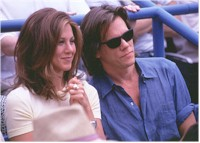
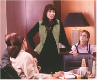
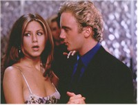

|
||
Picture Perfect
Review by Carrie
Gorringe
Posted 1 August 1997
Directed by Glenn Gordon Caron Starring Jennifer Aniston, Jay Mohr, Screenplay by Arleen Sorkin, Paul
Slanksy |
As is usual in romantic comedies, our heroine, Kate, (Aniston), is caught between the proverbial rock and a hard place. She has great ideas – indeed, it is she who comes up with the ad campaign that will, shall we say, cut the Gulden’s mustard and save the Mercer Advertising Agency – and ambition to burn. Unfortunately, she also has the ticking biological clock which sounds like Big Ben from ten feet away, and a hyper-yenta of a mother (Dukakis) who mistakes the ticking for the sound of an impending bomb blast, one that will take with it all of her dreams of grandprogeny. Her ambitions are thwarted by the company’s namesake, Mr. Mercer (Dunn), who disdains the idea of putting someone in charge of a campaign who dresses like she’s barely "out of college."
A trip to Henri Bendel takes care of that sartorial problem, but then she still has that little attraction to Sam (Bacon), the office bad boy who won’t date her because she’s too nice. On a brief trip to a friend’s wedding, she encounters Nick (Mohr), a videographer as earnest and sweet as the type of man some women claim to want; he’s what your mother used to call "a good provider," but Kate isn’t really interested. Despite her best intentions, some pictures of Nick and Kate at the wedding get back to and around the office, courtesy of Kate’s well-meaning friend, Darcy (Douglas). Soon Kate finds herself "engaged" to Nick in an attempt to please her paterfamilias employer. Moreover, Nick has provided further proof of his shining personality by saving a child from a fire. Naturally, everyone wants to meet Nick, and a company dinner is planned. For once in Kate’s life, however, her timing couldn’t have been worse; proving that she possesses her own biases against "niceness," she decides to push her luck and get Sam to have an affair with her, which he is all too happy to do, once he believes that she is engaged and he is in no danger of having her salivate over china patterns in his presence. Desperate, she contacts Nick and offers him one thousand dollars to act as her faux finance for one evening. There is one more little problem, however: Nick seems to be taking things a little too seriously, as does Sam, and suddenly too many rocks start hitting too many of Kate’s more vulnerable places.
Picture Perfect is a lower-key version of My Best Friend’s Wedding, but, in many ways, the reduction in star wattage does not reduce its charm. In fact, Picture Perfect is a paradox; the narrative’s lockstep adherence to the traditional romantic-comedy formula as outlined above (a woman in crisis must eventually decide to be true to her principles, after she figures out just what exactly they happen to be) actually renders it a better film than the Julia Roberts extravaganza (although it is still a fine resurrection of the screwball comedy). Picture Perfect may not have drastic mood swings, blatantly beyond-the-pale behavior and madcap cross-country races; however, what it does have is the ultimate paradox: all of the key characters are involved in doing their individual interpretation of the slow burn. The fever is in their minds and, with one exception (still rather subdued, given the situation), not in their actions. The audience cannot simply react to Capraesque physicality, because the action here lies in the subtle gestures and the coolly droll dialogue. Granted, this is a more labor-intensive process than merely watching people racing for the airport and the church, but Picture Perfect has at its core a fairly flattering presumption: it assumes that audience members enjoy the process of getting there as much as the arrival. They can, when the film gives them something to keep them occupied, and Picture Perfect does not disappoint.
Moreover, the screenwriters and director have come to yet another presumption, one which seemed to have gone the way of the dodo bird: people actually enjoy listening to elegantly witty banter. Supposedly, this should be hardly surprising, since co-writer and director Caron was the creative force behind Moonlighting, the ‘80s television show that gave new meaning to the concept of coitus postponus. The will-they-won’t-they dilemma was augmented by sharp ripostes dashed off with a seemingly indifferent air; Kaufmann and Hart it wasn’t, but Moonlighting did represent a glimmer of intelligent sexual communication in the television and social wasteland of the 1980s. Picture Perfect aspires to that same simple, but no less entertaining, level. There are, for example, subtle jabs at marriage-happy couples who only represent the premise that misery loves company; at the end of what was supposed to be the company dinner, replete with platitudes about the importance of marriage (all from people who are on their third trip round) – Darcy excuses herself with an offhanded remark about an appointment with the marriage counselor the next day. It takes a second or two for the significance of the comment to sink in, so matter-of-factly has it been delivered; then the satisfied chuckling commences. The line may be redundant, but the audience has been waiting for someone to puncture, regardless of how inadvertently, the balloons of the sanctimonious individuals who have been giving Kate such a hard time. Perhaps this is not comedy at its zenith, but it comes close enough to pass.
And a wonderful cast infuses the dialogue with enough spirit to get past the necessary core of predictability. Aniston, in particular, shows an immaculate sense of timing that even her role as Rachel in Friends has never adequately showcased. Her moves are in sync with the film’s myriad requirements. She is all appealing daffiness infused by nervous energy in one moment, then the picture of screwball sophistication the next. Mohr (last seen in Jerry Maguire) acts as a flawless foil to Aniston’s antics, as is Douglas. Only Dukakis, with her hectoring mannerisms and tone, becomes somewhat of a damper on the goings-on; her character falls too deeply into cliché to be completely credible. Otherwise, Picture Perfect keeps its goal of entertainment in nearly perfect focus.
Contents | Features | Reviews | Books | Archives | Store
Copyright © 1999 by Nitrate Productions, Inc. All Rights Reserved.